1926—The New-Way Course in Fashionable Clothes-Making
Lesson 3—First Dressmaking Stitches
The First Dressmaking Stitches
Someone once said that dressmaking was the art of making different stitches to hold different materials together. This might be true—if color, harmony and style were not forgotten! But we all admit that the dressmaking stitches are very important indeed, and that they must be known before the construction of dress can begin. Think of a man who doesn't know the language attempting to write a beautiful story! And think of a woman who doesn't know how to baste and hem and seam attempting to create a beautiful dress! You see how very important these stitches are, how largely the success of clothes-making is dependent upon them.
And so we urge you to study these stitches carefully and practice them until you feel that you know them perfectly. We realize, of course, that you may already know the first simple stitches—such as basting and hemming. But do not omit the lesson for that reason. To get the most from each of your lessons, and to prepare yourself for the interesting work that is to come, you must follow each detail of the course and do each bit of work we ask you to.
Basting
The first stitch we are going to ask you to practice is the basting stitch—the very simplest of all dressmaking stitches. It is not a permanent stitch, but often it determines the final beauty of the garment you are making. In draping a skirt, for instance, basting insures soft, even folds of the material. In adjusting the length of a dress, basting achieves a perfectly straight bottom. Then of course, there is the work of fastening together temporarily materials that are later to be permanently sewed together. Most people seem to think that basting is very unimportant, but you as a student of clothes-making now know that it plays an important part.
There are three distinct types of basting that every dressmaker should know—even basting, uneven basting and diagonal basting. Let us study each type separately—and let us study them so well that we will have no trouble with them whatever through the course.
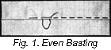Even Basting
- Even basting is used for marking purposes and for very particular fastenings, such as important seams. The stitches should be very carefully taken.
- Always knot the end of the thread; use No. 40 or 50 with a 5 or 6 needle.
- Begin at the right-hand end of the work, passing the needle through the material or materials from the upper side. Take a stitch underneath the exact length you want all succeeding stitches to be and bring needle up again through the material. For all ordinary purposes make your stitch about one-half inch long.
- Place the needle again through the material at the same distance from where the thread came through as the stitch underneath is. Take another stitch the same length as the one previous, and continue until the whole length of the material is basted.
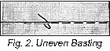Uneven Basting
- Uneven basting is used for very much the same purpose as even basting, except that it is more often used to hold together temporarily edges of material that are later to be permanently sewed together. It is used most commonly in turning hems.
- Begin in the same way as you did for even basting, but instead of taking a long stitch underneath, take a short one of about one-quarter of an inch.
- Bring the thread out and draw it over about an inch before taking another short stitch. In other words, make a long stitch on top and a short one underneath.
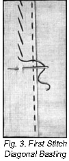Diagonal Basting
- When firmness is needed, as in tailoring for instance, the diagonal type of basting is used. It is a basting stitch you will find very convenient when working with cloth materials such as serges, tricotines, etc.
- 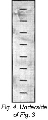 Begin at the upper end of the materials to be basted together. Take a short stitch on underneath side, about one-quarter inch, from right to left horizontally across the work as the ones shown in Fig. 4.
- Your needle is now on the right side of the material. Take a diagonal stitch as shown in Fig. 3, bringing the needle out directly under the point where you first brought it to the right side. This diagonal stitch may be one inch or more long, depending on how easily the material slips out of place.
- 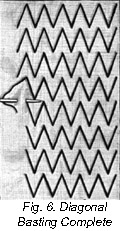Continue 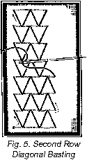these stitches until you come to the last one in the first row. Then instead of making just a one-quarter inch stitch on the wrong side, make it twice as long. Then simply work backwards up the material, making the stitches just as the first row was made and joining the stitches as shown in Fig. 6.
How to Stamp a Design
Beautiful designs for embroidery can be purchased at very little cost. It is a very simple matter to transfer these stamped designs to the garment you wish to embroider.
You must always have a smooth, well-padded surface for transferring designs. If you spread a blanket of several thicknesses of soft material over your sewing table, it will serve the purpose excellently. Before proceeding with the actual transferring of the design, be sure that you cut off from the pattern all printing matter that you do not wish to appear on the garment.
Place the material on which the design is to be stamped flat on the table. Be sure that there are no creases or wrinkles in it. Now place the pattern directly over it, being sure that it is exactly where you want the design to appear on the garment. Have a hot iron ready, and make sure that it is hot enough to insure a quick, accurate transfer of the design. Hold the pattern so that it cannot slip, and run the iron over the wrong side of the pattern quickly and with a smooth, easy motion. Cover every portion of the design. When you remove the pattern from the material, you will find that the design has been correctly transferred. Of course, the pattern cannot be used again—except as a guide for outlining a similar design in pencil.
When you are sure that you know the three types of basting and tailor's tucks, and that you will be able to use any one of these stitches without referring back to the lesson, proceed with the running stitch. This is really the first permanent sewing stitch you must know. It is used for very fine seams where machine stitching is not desirable, as on baby clothes or where a particularly dainty effect is desired.
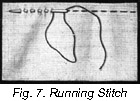Running Stitch
- Use as fine a needle and thread as your material will allow.
- Fasten the thread with several very small back stitches (see next paragraph for back stitch). Never knot the end of your thread when you begin a running stitch as it impairs the appearance of the work and thus indicates poor workmanship.
- Take a small stitch passing the needle over and under as few threads as possible. The smaller your stitch is the finer the finished work will be.
- Take several of these stitches on your needle, making all uniform in size, and then draw the thread through the material and continue until complete length of the material is covered.
- Practice the running stitch carefully and you will soon find that you will be able to do it quickly and easily. It is a stitch you will find very useful.
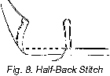Half-Back Stitch
This stitch is used on seams that require a little more strength than the running stitch but not so much as the back stitch. It is also a little daintier than the back stitch.
To make it, take a stitch just twice as long as a regular running stitch on the under-side of the material. Then go back just half way to the end of the preceding stitch. Continue in this way along the seam line. (See Illust. III-3).
Combined Stitch
A stitch that is stronger than the running stitch and yet one that can be made more quickly than the half-back or back-stitch is called the combined stitch.
To make it, take three or four tiny running stitches and then a back stitch. Repeat this procedure for the length of the seam.
Back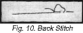 Stitch
- Where firm hand work is required, the back stitch is used. It is convenient for fastenings, seams and wherever strength is needed. Very often it is used to take the place of machine sewing—and in fact, it closely resembles the machine stitch in appearance.
- Start at the upper end of the work, bring the needle through from under side of the material to the upper side.
- Take a small stitch backward on the upper side, and one twice its length forward on the under side of the material. This will bring the needle out a space in advance of the stitch on the upper side.
- Back-stitch again, inserting the needle to keep the last stitch, and continue as before. This makes a strong dependable stitch that can be used very often in place of straight machine stitching.
Over 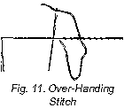Handing
- To join folds or selvedges, or to apply bits of lace or other trimming, where it is necessary to have a flat-finished seam, over-handing is used.
- If you are joining selvedges be sure that the edges are kept exactly together; if you are joining raw edges it is better to baste them together first.
- Hold the work lightly between your fingers with the edge up and draw the needle through both edges.
- Holding the edges even, draw the thread across the top and take another stitch the same as the first. Be sure you make your stitches fine and close together, but do not draw them too tightly.
- For finishing seams, the stitches are made a little longer and are called overcasting or overstitching.
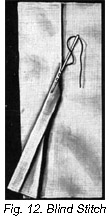Blind Stitching
- Invisible stitching and hemming is called blind stitching. It is used for hems, trimmings, or bias bands when the stitching is to be concealed.
- First baste your hem a little distance below the turned edge. Do not baste very near the edge as it will interfere with the stitching.
- Fasten the thread under the fold of the hem with a back stitch, bringing the needle through the crease of the turning and taking up one or two threads of material under the hem.
- Take three or four very fine running stitches on the turned-under portion of the hem, bring the needle out through the edge of the hem and continue to the end.
- The whole secret of blind stitches is to have no stitches seen on the hem side, and on the right side only where the threads have been taken up to hold the hem.
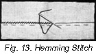Hemming Stitches
Throughout the study of clothes-making, and always in clothes-making, itself, there is the need for perfect hemming. The beauty of an otherwise perfect dress is marred by an uneven, poorly hemmed skirt. The most attractive blouse sacrifices its charm if the edges are not finished with neat hems. Learn how to hem correctly now, from the following paragraphs, and you will never experience difficulty in imparting smart, well-finished edges to the pretty things you make at home.
- There are two folds to a hem—a first narrow fold to conceal the raw edge of the material, and another deeper fold as wide as is desired.
- Hold the work to be hemmed in a vertical position, placing the hem over the forefinger and under the middle finger and holding it down firmly with the thumb. It is always wiser to baste first, especially on good material, as this insures a perfectly straight hem.
- Begin at the top, fastening the thread with a back stitch under the fold.
- Pointing the needle toward the left shoulder, make a slanting stitch taking up a few threads of the foundation material and a few threads at the fold of the hem. Draw needle through and repeat.
- Keep your stitches small and even, for the whole beauty of hemming depends upon fine stitching.
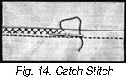Catch Stitches
- This stitch is used to finish flannel seams and hems, to fasten down linings, and sometimes it is even used for trimming purposes.
- In making the catch stitch, work from left to right—the point of the needle is always to the left. Begin at the left end of the work, taking your first stitch in the foundation.
- Now bring the thread to the right side of the work, carrying it diagonally across the seam and take a small straight stitch with the needle pointing left.
- Carry the thread diagonally across the seam again and continue in this manner with small even stitches, being careful that they do not show on the right side.
You have now completed a study of the first simple stitches used in dressmaking. You are now able to baste, hem, backstitch and overcast correctly. Perhaps you have found the lesson the least bit uninteresting, but later on when you are ready for the real interesting work you will not have to bother about details. You will already know all about them, you see!
If there is any little point about this lesson you do not quite understand, do not hesitate to write me about it and tell me just what is puzzling you. I will be glad to help you solve your problem.
Remember that practice makes perfect! You can never become an expert clothes-maker unless you practice, practice, practice. So as you take up the various steps I want you to actually do them until you feel that you have reached some degree of perfection. Just reading the lesson over will be of little value to you unless you put what you read into actual use.
These first lessons are mighty important, for later, when you are creating complete garments you will put to use the various things you are learning now, so do not treat these lessons lightly, for right now you are building the foundation for your future success as a clothes-maker and we want that foundation to be correct.
Lessons 2 and 3
Questions
- If your machine becomes gummed, what is best to remove the dirt?
- What happens to your thread when the machine needle is not properly set?
- Why should your bobbin be wound smoothly?
- When is even basting used?
- How is the uneven basting made?
- Why should you use diagonal basting in the making of tailored garments?
- What other stitch does the back stitch resemble in appearance?
- What stitch should you use in putting in a hem if you wished the stitches concealed?
- Which direction do you work from in making the catch stitch?
Samples of the following should be sent in for inspection in the envelope provided for the purpose. If samples are not correctly done, corrected work will be returned with full explanation. In the case of COMPLETED GARMENTS, the work will be returned to the student for use. Mail your samples with your answers to Quiz Questions and be sure to put name and address and student number on the outside of the envelope. Don't make your samples larger than 5 inches long and 3 inches wide.
Homework Problems
- Make a sample of the running stitch.
- Make a sample of overhanding.